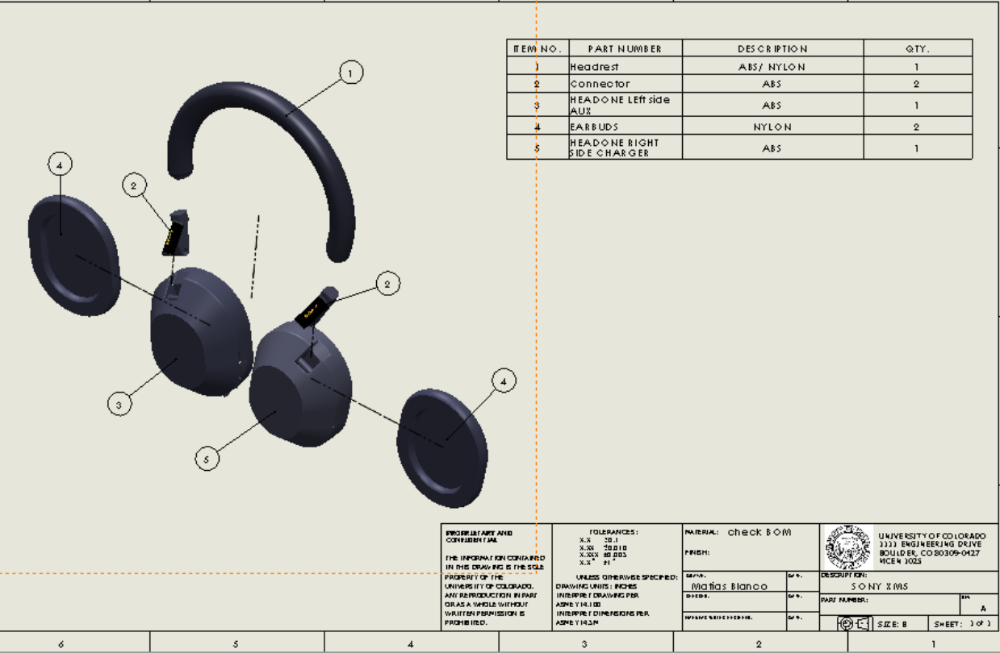
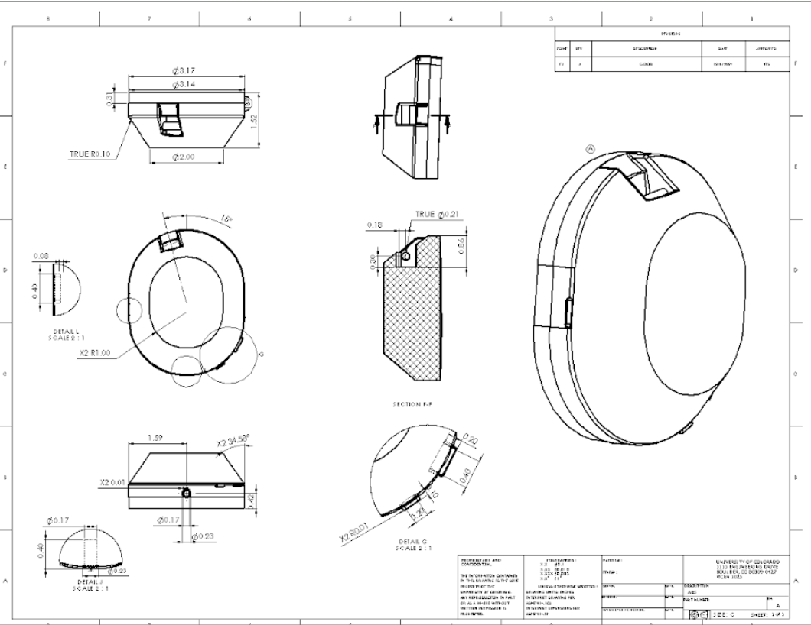

Reverse Engineering the Sony XM5 Headphones
For our MCEN 1025 CAD class at CU Boulder, we could reverse engineer any object we wanted. I picked the pair of Sony XM5 headphones that go everywhere with me, and set out to rebuild them in CAD.
The Project
The build took about 10 hours and involved modeling five key components: the headrest, connectors, earbuds, and both the left and right earcups. It turned out to be one of the most rewarding projects of the course. It showed me just how much I'd learned, and proved I could take a real-world object and faithfully recreate it in CAD.
The Hard Part
The earcups were by far the toughest. Their complex elliptical shape, covered in buttons and slits, made them genuinely difficult to replicate accurately. Getting them right took patience and a lot of iteration.
The Big Lesson
My biggest takeaway was the importance of breaking a complex assembly into separate components. Early on I made the mistake of building the buttons directly into the main body instead of modeling them as individual parts. When it came time to create drawings, that decision made the documentation messy and hard to manage. It was a clear reminder that cutting corners in part creation comes back to bite you, and that a clean assembly structure matters as much as the geometry itself.
This project was a great exercise in precision, problem-solving, and CAD best practices, and I look forward to applying these skills to future engineering challenges.
Gallery

